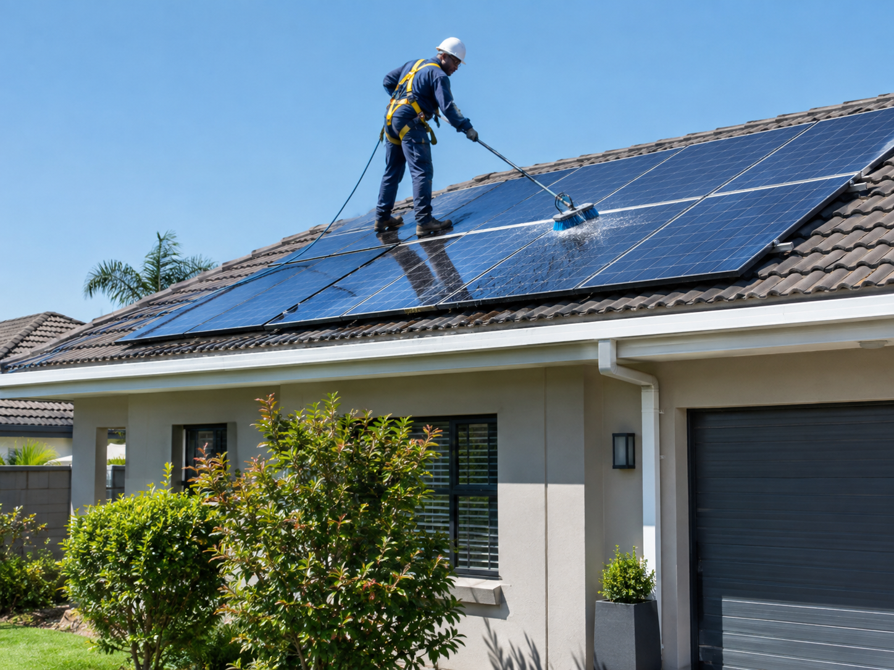
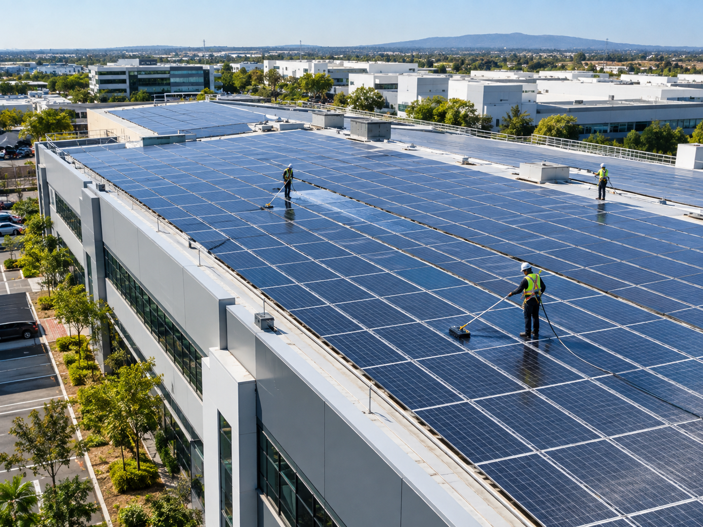

Residential Roof Services
Ideal for home systems with 6 to 30 panels. Complete deionized water glass wash, frame clearance, and visual cabling check.

Ideal for home systems with 6 to 30 panels. Complete deionized water glass wash, frame clearance, and visual cabling check.

Scheduled maintenance for office parks, factories, and retail centers. Flexible off-peak hours to suit your business.

Galvanized steel mesh around panel perimeters to prevent nesting pigeons, plus thermal drone cell diagnostics.
| Feature and Inclusions | One-Off Clean | Bi-Annual Care | Premium Care |
|---|---|---|---|
| Deionized Pure Water Wash | Yes | Yes | Yes |
| Visual Inverter and Cable Check | Yes | Yes | Yes |
| Scheduled Automated Visit | No | Yes | Yes |
| Thermal Drone Hotspot Scan | Add-on | Add-on | Included |
| Bird Pest Mesh Inspection | No | Included | Included |
For residential areas, bi-annual cleaning every 6 months maintains peak efficiency. Systems near busy roads or farmlands benefit from quarterly cleans.
Rain removes light dust but leaves mud streaks, mineral spots, and soot film behind. Specialized pure-water scrubbing is needed to lift stubborn film layers.
No. We use ultra-soft nylon bristles made for solar glass paired with non-pressurized pure water. We never use chemicals or abrasive pads.